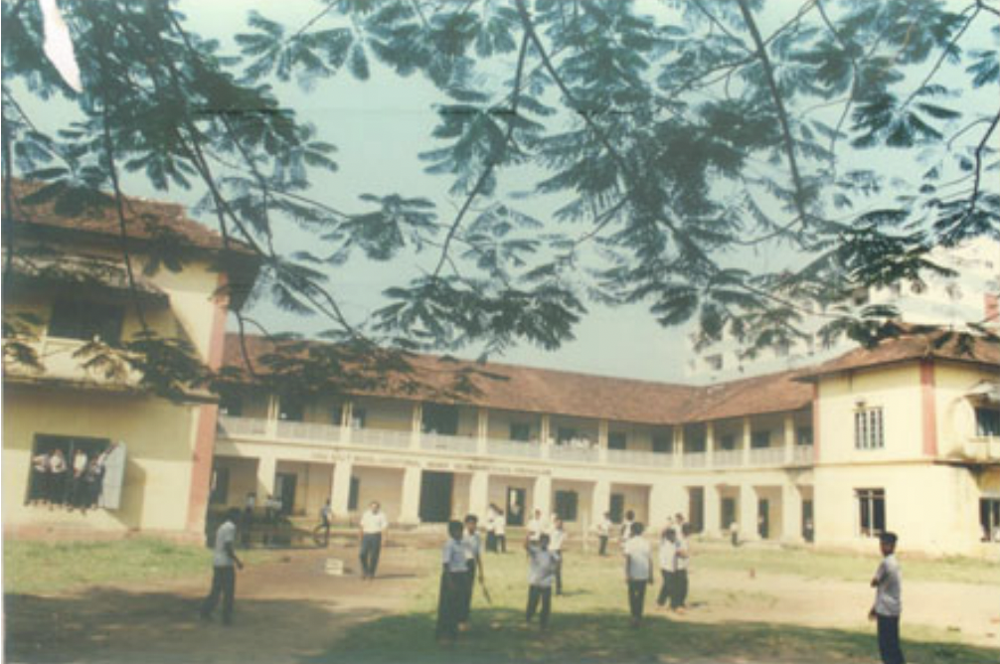
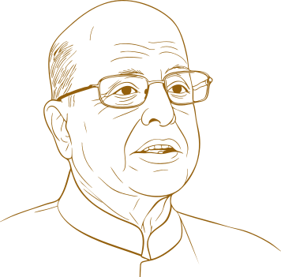
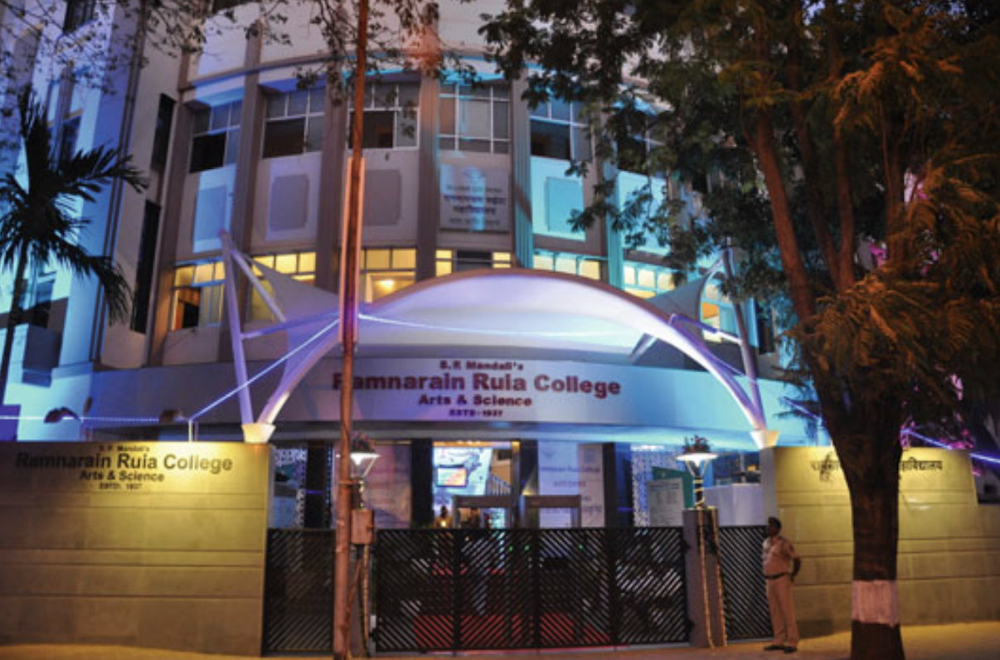
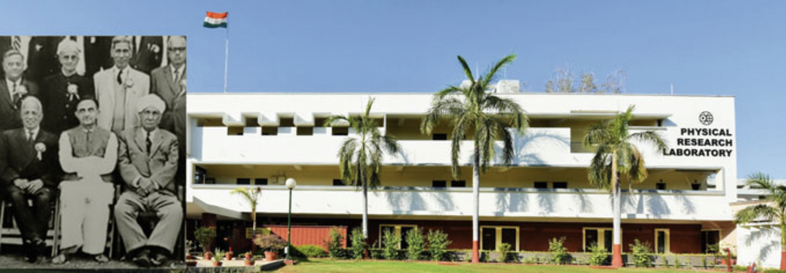
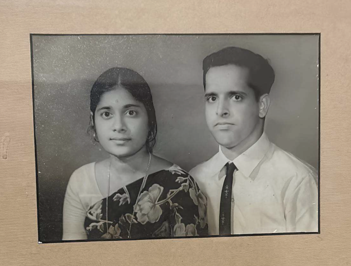

K. Kasturirangan is born on October 24, 1940, in Ernakulam, Kerala, to C.M. Krishnaswamy Iyer and Visalakshi. He attends Sree Rama Varma High School, Ernakulam, and later South Indian Education Society High School, in Bombay.

In his book Space and Beyond, KK. Kasturirangan reflects on his life as “extraordinary and many-splendored.” This timeline traces the remarkable journey behind those words.

K. Kasturirangan is born on October 24, 1940, in Ernakulam, Kerala, to C.M. Krishnaswamy Iyer and Visalakshi. He attends Sree Rama Varma High School, Ernakulam, and later South Indian Education Society High School, in Bombay.

Completes BSc (Honours) in Physics at Ramnarain Ruia College, Mumbai

Completes MSc in Physics from Bombay University
Joins Physical Research Laboratory (PRL) for his doctoral work in cosmic X-rays in Vikram Sarabhai’s laboratory

Marries Lakshmi. They have two sons, Rajesh and Sanjay

Completes doctorate in experimental high-energy astronomy.
Receives an offer to do postdoctoral work with Nobel Laureate Prof Louis Alvarez at UC Berkeley, but is convinced by Sarabhai to join ISRO instead
Takes on systems engineering responsibility for Aryabhata, India’s first satellite